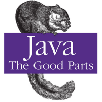
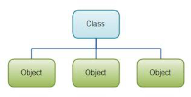
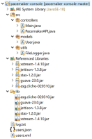

Assignments
Assignment 1
1: Paradigms & Languages
Introduction
Software Paradigms
Programming Language Evolution
Programming Language Convergence
Lab-01 Eclipse & Java
RefCardz: Agile Adoption
2: The Java Programming Language
Introduction
Basics + Arrays
Classes
Control Statements
Object Oriented Concepts
Lab-02 CLI & Classes
3: Inheritance & Collections
Implementation Inheritance
Interface Inheritance
Introducing Collections
Using Collections
Lab-03 Objects & Serialization
2: The Java Programming Language
Eamonn de Leastar (edeleastar@wit.ie) and Dr. Siobhan Drohan (sdrohan@wit.ie)
Introduction

Basics + Arrays
Classes

Control Statements
Object Oriented Concepts
Lab-02 CLI & Classes
